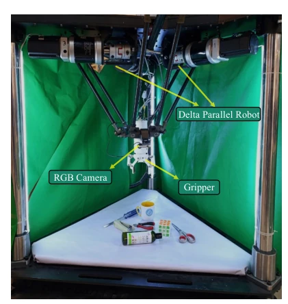
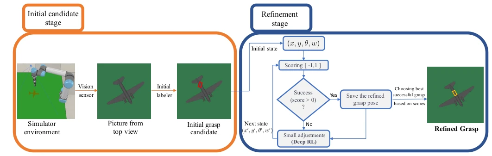
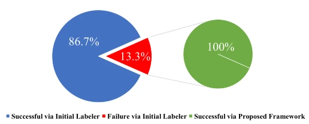
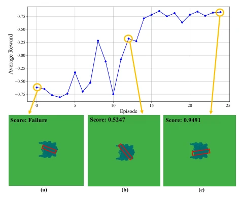
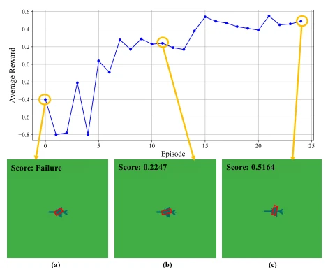
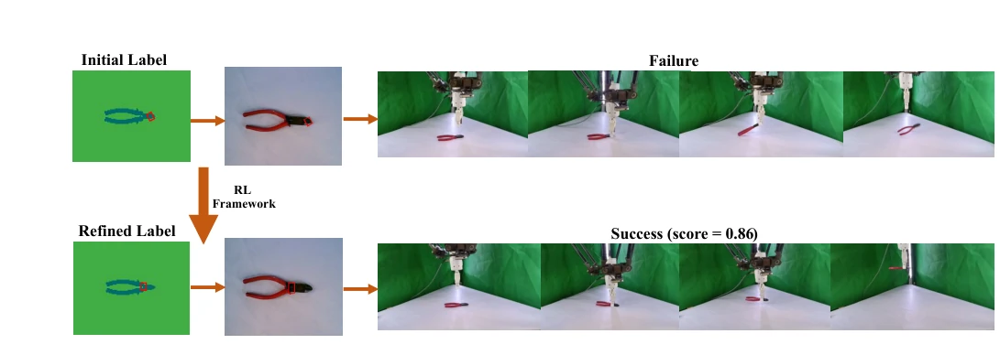

This paper attempts to use DQN to patch traditional geometric grasping algorithms, forcibly rescuing failed grasps. The highlight is that the 100% success rate is indeed impressive, and Sim-to-Real is also successfully implemented, worthy of a positive review. However, the drawbacks are equally obvious: it is essentially a local optimizer, not end-to-end; if the geometric algorithm's initial candidates are all incorrect, RL is powerless to recover. The 2D top-view perspective is too idealized in the real world; once occlusion and lighting change, it fails. Although DQN processing 4D states is simple, the discrete action space limits precision, feeling like using a cannon to kill a mosquito. The conclusion also admits that generalization needs improvement; do not expect this model to be directly deployed on the production line to handle unknown objects; currently, it is more like a tuning toy for specific scenarios.
Robot grasping still lacks human-like dexterity in unstructured environments. Existing data-driven methods are mainly divided into two categories: supervised learning relies on large amounts of pre-annotated data, with high computational costs and limited generalization [8]-[10]; reinforcement learning can learn end-to-end, but faces problems of low sample efficiency and sparse rewards [11]-[16]. Although keypoint representation provides interpretability [4]-[6], it often relies on expensive manual 3D annotation [4], [19]. Recent automatic 2D keypoint generation methods still rely on traditional geometric techniques, easily missing feasible grasp points [22]. Therefore, initial grasps generated by existing geometric methods often fail, lacking a robust refinement strategy to convert failed attempts into success. This paper aims to bridge the gap between traditional geometric methods and data-driven learning, optimizing local candidates via RL rather than global exploration, to improve the robustness and adaptability of the grasping system.

Fig. 1. The Delta parallel manipulator, equipped with a two-finger parallel- jaw gripper, is shown over the workspace. An overhead RGB camera captures the workspace.
The overall process is divided into two stages: initial annotation and reinforcement learning refinement. First, utilizing the CoppeliaSim simulation environment, a 2D top view is obtained via an RGB-D camera, and the geometric algorithm proposed by Sabzejou et al. [22] is used to generate initial grasp candidates. If the initial grasp fails, it enters the DQN refinement module. The state space is defined as a 4D vector (x, y, θ, w), representing the center coordinates, rotation angle, and width of the grasp rectangle. The action space consists of 9 discrete adjustments, including pixel-level displacement, rotation, and width fine-tuning (see Table I). The reward function is based on grasp stability scoring, calculating the object rotation angle deviation before and after grasping (|∆θ|); successful grasps are normalized to [0, 1], failures to [-1, 0], with smaller rotation yielding higher scores. The DQN network adopts a fully connected structure, containing three hidden layers (256, 128, 64 neurons), using the Adam optimizer. Training employs experience replay and the epsilon-greedy strategy, with the goal of minimizing MSE loss. This framework does not relearn grasping but focuses on local optimization near initial candidates, iteratively adjusting failed poses to stable poses.

Fig. 2. The workflow of the refinement process. The initial grasp candidate, generated through geometric labeling, is refined within the simulation environment. Using reinforcement learning, the refinement stage iteratively adjusts the grasp pose (x, y, θ, w) through actions to maximize stability and minimize slippage, transforming a failed grasp into a successful one. The scoring mechanism, serving as the reward, evaluates each state and guides the agent toward optimal grasp configurations.
Experiments are based on a subset of 300 objects from the Dex-Net dataset, among which 38 objects cannot be grasped under the geometric algorithm. Simulation uses a UR5 manipulator and RG2 gripper, while physical verification uses a Delta parallel robot. Evaluation metrics include grasp success rate and average reward. Results show that the proposed framework successfully converted 38 initial failed grasps into successful grasps, achieving a 100% success rate (Fig. 3). During training, the average reward increased significantly with iterations (Fig. 4, 5), indicating that DQN effectively learned the optimization strategy. In Sim-to-Real verification, a grasp that failed in simulation, after refinement, successfully lifted an object on the real Delta robot (Fig. 6). This indicates the method possesses cross-domain transfer capability, but is limited to optimization for specific failure cases, with no generalization test on unseen objects observed.

Fig. 3. Outcomes of challenging objects.

Fig. 4. Average reward per episode and the corresponding grasp configuration.

Fig. 5. Average reward per episode and the corresponding grasp configuration.

Fig. 6. Sim-to-real validation of the proposed grasp refinement framework using a pair of pliers. (Top) An initial grasp candidate, generated by the geometric algorithm, proves unstable, leading to failure in both the simulation and the real-world execution. (Bottom) After processing the failed candidate, the proposed RL framework generates a refined grasp pose. This new pose, which was identified as successful in simulation, enables a stable lift with a Delta parallel robot, confirming the direct transfer of the refined grasp’s effectiveness from simulation to a real-world task.